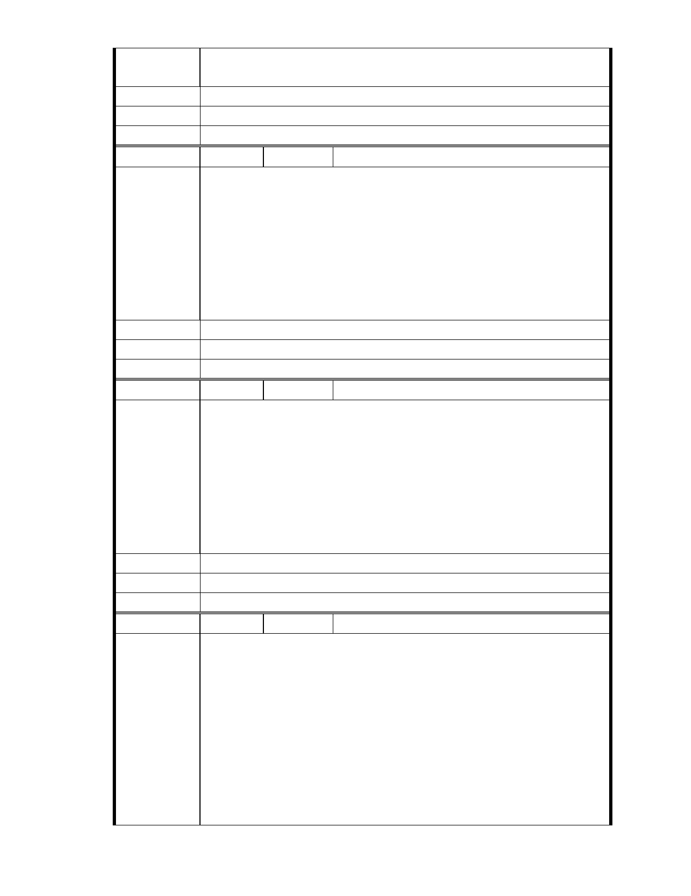

更謹慎更嚴格，認真地建好它們的家園，不會砸掉自己的金字招牌，所
以我歡迎慈濟做我的好鄰居，讓大湖更美麗，生活更方便。
建議辦法
市 府 說 明 相關陳情意見將納入本案審查人民意見，依法定程序辦理。
委 員 會 決 議 同編號 1。
編
號 193
陳情人 MA201212240132
親愛得郝市長以及各局長官：我是內湖的居民，上次從朋友中聽到慈濟
園區要整頓成綠化，經過多次的說明會、讓我有點心痛，因為我們內湖
人都沒有一個像樣的公園，每次聽完說明會都睡不著，第一點：內湖的
捷運是全台北市捷運裡面最不好做的，雖然不是郝市長一手規劃的，可
陳 情 理 由 是我們也會面對一切。第二點：很多人都批評花博很不好，可是在我們
的眼裡，你們真的很棒！因為辦的真的很好，加油。至於內湖慈濟園區
已經討論多人，希望在市長上位期間能將此是圓滿畫下句點，讓大湖公
園與園區結合為內湖人還有台北市政府一個好的地方。加油加油。
建議辦法
市 府 說 明 相關陳情意見將納入本案審查人民意見，依法定程序辦理。
委 員 會 決 議 同編號 1。
編
號 194
陳情人 MA201301020338
郝市長:您好
我居住內湖已近 40 年了.常常到大湖運動.10 多年前看到大湖公園對面有
一處公車修理場髒亂油漬和散亂的電纜.聽聞慈濟 11/15 在大湖國小辦說
明會.身為內湖人應當關心.了解慈濟在改善現址規劃慈善心靈園區.提供
陳 情 理 由 白天獨居老人到基地做環保和人聊天心情輕鬆許多.慈善服務.急難救助
等.提供內湖居民身心健康並改善當地景觀.讓生態.科技.社會福利合而兼
之.所以我支持慈濟改善.
建議辦法
市 府 說 明 相關陳情意見將納入本案審查人民意見，依法定程序辦理。
委 員 會 決 議 同編號 1。
編
號 195
陳情人 MA201301030122
我全家 85 年搬進大湖山莊，後園正面對公車轉運不但污染空氣，更有礙
居民健康，園區環境雜亂，後發現慈濟搬入，園區已不在零亂，後有因
緣認識了證嚴上人及這群無私付出的志工，讓我不由的加入此團隊，大
湖景色優美，慈濟更能提昇當地居民身心之健康，真心的期盼園區能規
劃一個兼具叢林與生態湖的慈善心靈園區。
陳 情 理 由 參加幾次座談會聽到部分人士表示：「慈濟園區雖設有滯洪池，但是如果
像南部豪大雨時，一天降下幾千毫米的雨量，誰敢保證不會淹水」、「為
何要建志工中心，提供全世界人士使用」等論調，試問建商蓋好房子，
賣掉就會離開，但是慈濟是要常住這裡，如果以後經常山崩淹水，慈濟
更是首先遭殃，他會拿自己的生命開玩笑嗎?會陷害自己嗎?即使慈濟不蓋
- 249 -